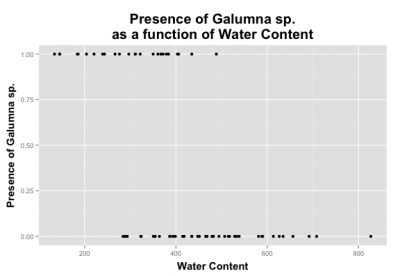

Chapitre 7 Interpréter la sortie d’une régression logistique
La sortie du modèle de régression logistique indique que les deux
variables explicatives (WatrCont et Topo) sont significatives, mais
comment interprète-on les coefficients estimés ? Rappelez-vous que nous
avons effectué une transformation des valeurs prédites par le modèle
(i.e. la probabilité que Y = 1), alors il faut utiliser une fonction
inverse pour pouvoir interpréter correctement les résultats. On peut
utiliser la fonction exponentielle ex pour obtenir la cote de
probabilité pour chaque variable explicative.
# Pour obtenir les pentes, il faut utiliser la fonction
# exponentielle exp(). Ceci mettra les coefficients sur
# l'échelle des cotes. Mathématiquement, ceci correspond à :
# exp(model coefficients) = exp(log(μ / (1 - μ)) = u / (1 -
# μ) C'est notre rapport de cotes !
exp(logit.reg$coefficients[2:3])
# WatrCont TopoHummock 0.9843118 8.0910340 Pour obtenir
# l'intervalle de confiance sur l'échelle des cotes :
exp(confint(logit.reg)[2:3, ])
# 2.5 % 97.5 % WatrCont 0.9741887 0.9919435 TopoHummock
# 2.0460547 38.6419693Prenez note que la cote pour une variable explicative est calculée
lorsque les autres variables sont gardées constantes. La topographie a
une cote de 8.09. Ceci signifie que la probabilité d’observer Galumna
sp. est 8.09 fois plus vraisemblable lorsque la topographie est de type
hummock plutôt que blanket.
Lorsque la cote est inférieure à 1, l’interprétation est un peu plus compliquée. Si c’est le case, il faut prendre la valeur inverse de la cote (i.e. 1 divisé par la cote) pour faciliter l’interprétation. L’interprétation revient à dire comment l’observation d’un phénomène est MOINS probable. Pour le contenu en eau du sol, la cote est de 0.984. L’inverse est 1 / 0.984 = 1.0159. Ceci signifie que l’augmentation d’une unité en contenu en eau diminue la vraisemblance d’observer la présence de Galumna sp. de 1.0159. On peut aussi l’exprimer en pourcentage en soustrayant 1 à cette valeur : (1.0159 - 1) * 100 = 1.59 %. Il est 1.59 % moins vraisemblable d’observer Galumna sp. avec une augmentation d’une unité de contenu en eau. Pour se convaincre qu’on fait la bonne interprétation, on peut représenter graphiquement les résultats de la présence de Galumna sp. en fonction du contenu en eau du sol. On voit qu’en moyenne la présence de Galumna sp. est plus élevée lorsque le contenu en eau est faible

Lorsqu’un paramètre estimé est entre 0 et 1 sur l’échelle des cotes, la relation entre la variable réponse et la variable explicative est négative. Si la valeur est supérieure à 1, cela indique une relation positive entre les variables. Si l’intervalle de confiance inclut la valeur 1, la relation entre les variables n’est pas significative. Rappelez-vous qu’une valeur de 1 sur l’échelle des cotes signifie que la probabilité d’observer un phénomène Y est la même que celle de ne pas observer ce phénomène (i.e. quand p = 0.5, 0.5/(1-0.5) = 1).
Pour obtenir une probabilité au lieu d’une cote pour chaque variable explicative, il faut utiliser la fonction logit inverse :
logit-1 = 1/(1+1/exp(x))
où x est le paramètre à transformer de l’échelle log odds à l’échelle
de probabilité. Pour le modèle logit.reg, le paramètre estimé pour la
topographie est de 2.091 sur l’échelle log odds. Donc, la probabilité
est donnée par :
1/(1+1/exp(2.091)) = 0.89 ce qui équivaut à 1/(1+1/8.09). Rappelez-vous
que la valeur 8.09 est sur l’échelle des cotes. On a une probabilité de
0.89 d’observer Galumna sp. lorsque la topographie est de type
hummock.
# On commence avec la valeur de cote pour la topographie du modèle logit.reg :
µ/ (1 - µ) = 8.09
# On réarrange pour isoler µ :
µ = 8.09(1 - µ) = 8.09 - 8.09µ
8.09µ + µ = 8.09
µ(8.09 + 1) = 8.09
µ = 8.09 / (8.09 + 1)
µ = 1 / (1 + (1 / 8.09)) = 0.89
# On obtient le même résultat sans utiliser la fonction logit inverse !